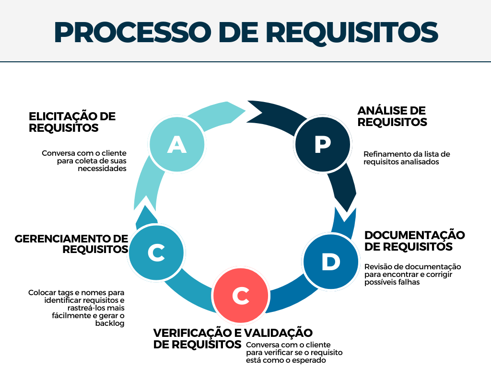

O PAULA (Paranoá Alfabetizando Utilizando Letramento Analógico) é um aplicativo mobile cujo escopo é contribuir na alfabetização de jovens e adultos com baixo grau de escolaridade, isto é, com nenhuma ou pouca instrução — público que não completou, abandonou ou não teve acesso à educação formal por qualquer motivo na região administrativa do Paranoá. Sendo assim, o PAULA destina-se às pessoas que desejam iniciar ou retomar seu processo de alfabetização.
Diferentemente de outros aplicativos semelhantes, tal como o AJA e Duolingo, o PAULA visa proporcionar dizeres regionais do Paranoá, recriando sua cultura e origem nas citações de palavras que o aplicativo repetirá ao ser utilizado.
Para
Jovens e adultos, da RA do Paranoá, com nenhuma ou pouca instrução.
Dos quais(Quem)
Desejam retomar, ou começar sua alfabetização.
O PAULA
É um aplicativo mobile educativo.
Que
Visa contribuir com a alfabetização inicial ou evolução da formação educacional básica com o usuário de forma lúdica e amigável ao usuário.
Ao contrário
Plataforma AJA.
Nosso produto
contará com dialetos e expressões populares da região, para maior familiaridade do usuário.
1.2 Objetivos do Produto
A proposta desse projeto é desenvolver um aplicativo para aparelhos celulares, tipo smartphones com ferramentas visuais e auditivas, como o uso de uma dubladora para gravar falas para facilitar as informações, e didáticas para a alfabetização inicial dos usuários e terá como atrativo palavras e dizeres regionais do Paranoá para que a população se sinta orgulhosa de ter um software que recrie suas origens e cultura nas citações de palavras que o aplicativo repetirá ao ser utilizado.
1.3 Tecnologias a Serem Utilizadas
Git: Controle de versionamento.
GitHub: Repositório e definição de Sprints.
GitHub Pages: Documentação do projeto
Discord: Realização das reuniões.
Telegram: Controle de contato com os integrantes do projeto.
Flutter: Desenvolvimento do front-end.
Python Django: Desenvolvimento do back-end.
Trello: Organização do quadro Kanban — controle de sprints.
2 VISÃO GERAL DO PROJETO
2.1 Organização do Projeto
Papel
Atribuições
Responsável
Participantes
Desenvolvedores
Codificar o produto, codificar testes unitários, realizar refatoração
Emerson
Emerson, Mateus Almeida, Caio Berg, Lucas de Padua, Thalis, Pedro Lucas, Fellipe Pereira
Tech Lead
Será responsável pela qualidade do código e coordenará o uso e integração das tecnologias usadas no projeto
Emerson
Emerson, Mateus Almeida, Caio Berg, Lucas de Padua, Thalis, Pedro Lucas, Fellipe Pereira.
Scrum Master
Responsável por coordenar os rituais do Scrum de modo que sejam feitos corretamente
Cristian Furtado
Fellipe Pereira, Cristian Furtado, Rodrigo Santos, Valderson Junior, Victor Matheus.
Product Owner
Irá definir o escopo da sprint atual e fazer a verificação/validação dos requisitos com o cliente
Fellipe Pereira
Equipe de Requisitos
Documentador de requisitos
Garantir a clareza dos requisitos e a realizar sua documentação, gerência e rastreabilidade.
Rodrigo Santos
Fellipe Pereira, Cristian Furtado, Rodrigo Santos, Valderson Junior, Victor Matheus.
Cliente
Comunicar sobre as necessidades de seu projeto
Yoko, Emerson
---
2.2 Planejamento das Fases e/ou Iterações do Projeto
O ciclo de vida de uma iteração (sprint) do time foi pensada para ter o prazo de uma semana cada sprint e esta começará na segunda-feira e se encerrará no sábado, onde haverá os ritos finais da sprint e o planejamento para a próxima.
2.3 Matriz de Comunicação
Descrição
Área/Envolvidos
Periodicidade
Produtos Gerados
Acompanhamento das Atividades em Andamento
Equipe de Requisitos/Desenvolvimento
Semanal/Diário
Dailies
Acompanhamento dos Riscos, Compromissos, Ações Pendentes, Indicadores
Equipe de Requisitos
Quinzenal
Resumo de reunião
Comunicar situação do projeto
Equipe Requisitos e Desenvolvimento e Cliente
Quinzenal
Resumo de reunião
2.4 Gerenciamento de Riscos
Descrição
Causa
Medida Mitigadora
Falta de conhecimento
Tecnologia para captação de aúdio será deixada para ser implementada ao final do desenvolvimento.
Na pior das hipóteses, caso seja dada pela equipe a impossibilidade de implementação do requisito, será marcada uma reunião com o cliente para a exploração de vias alternativas.
Diminuição da equipe
Fatores externos, como trancamento de disciplina, ou internação hospitalar devido à pandemia ou outros fatores.
Caso a equipe seja diminuída, será realizada uma reunião para a redefinição do backlog da sprint para a entrega do produto baseado na ordem de prioridade dos requisitos.
Diminuição do comprometimento
Os membros da equipe são universitários, então, é possível que compromissos externos afetem seus rendimentos — seja por estágio ou entrega de outras matérias
Dessa forma, de modo a mitigar tal fato, será questionado aos membros a cada reunião diária (daily) se eles conseguirão entregar a dada tarefa. Caso haja impedimentos, tal fato será tratado da mesma forma que a diminuição da equipe, isto é, redefinição do backlog da sprint para a entrega do produto baseado na ordem de prioridade dos requisitos.
2.5 Critérios de Replanejamento
Descrição
Causa
Replanejamento
Equipe com dificuldade de entregar e desenvolver funcionalidades
Comprometimento com outras matérias/ Motivos pessoais
Aliviar nas funcionalidades do ciclo de desenvolvimento atual/próximo ciclo
Falta da funcionalidade da captação de áudio do usuário
Recurso e tempo
Descartar essa funcionalidade, a fim de entregar um produto com qualidade, mediante a essa problemática.
Equipe com déficit de participantes
Trancamento/Desistiu da matéria
Tentar manter o desenvolvimento das funcionalidades, mesmo com a equipe com esse déficit. No último caso, colocar um integrante de uma equipe em outra para equilibrar Requisitos/Desenvolvimento.
3 PROCESSO DE DESENVOLVIMENTO DE SOFTWARE
O processo de desenvolvimento de software será feito por uma abordagem ágil, onde a equipe de desenvolvimento terá fixo o tempo e os recursos, no caso o período letivo do semestre, com os requisitos variáveis, priorizados pelo cliente.
Cada etapa deste processo seguirá conforme mostra a imagem abaixo:
Ciclo de vida evolutivo
Scrum/Kanban
Análise dos requisitos
Analise e design:
Atividade
Objetivo
Papel
Método
Ferramenta
Definir design das interfaces
Criar um modelo das interfaces que serão desenvolvidas
Product Owner e Equipe de Desenvolvimento
"UCD, Design Iterativo"
Figma
Definir do banco de dados
Criar um modelo do banco de dados que serão desenvolvidas
Equipe de Desenvolvimento
Modelo Relacional
Miro
Revisão de interface
Validar a interface para o desenvolvimento
Equipe de Desenvolvimento
Reunião com o Product Owner e cliente
"Figma, Miro"
Implementação:
Atividade
Objetivo
Papel
Método
Ferramenta
Codificação das Interfaces
Desenvolver as telas definidas pela sprint
Equipe de Desenvolvimento
Seguir o design definido anteriormente
Flutter
Codificação do banco de dados
Desenvolver o banco de dados definido pela sprint
Equipe de Desenvolvimento
Seguir o design definido anteriormente
MySQL
Testes:
Atividade
Objetivo
Papel
Método
Ferramenta
Realizar Teste
Encontrar falhas no software
Equipe de Desenvolvimento
Testes manuais
xxx
Realizar Teste Unitarios
Encontrar falhas no software
Equipe de Desenvolvimento
Testes de widget
"Pacote ""test"""
4 PROCESSO DE ENGENHARIA DE REQUISITOS
O processo da engenharia de requisitos será feito por uma abordagem ágil, onde a equipe de desenvolvimento irá trabalhar com as metodologias Scrum/Kanban, um híbrido que pode auxiliar no desenvolvimento do nosso projeto.
A figura abaixo explica o processo que a equipe de requisitos se baseará para a montagem dos artefatos da disciplina e suas etapas.

4.1 Elicitação de Requisitos
Atividade
Método
Ferramenta
Entrega
Pesquisa sobre o tema do projeto e seu campo de atuação
Pesquisa
Google
Conhecimento sobre o produto
Conversa com o cliente para coleta de suas necessidades
Entrevista e reunião
Google meets
Lista de requisitos preliminares
4.2 Análise de Requisitos
Atividade
Método
Ferramenta
Entrega
Conversa com o cliente e com a equipe de desenvolvimento para verificar a viabilidade
Reunião
Discord/Google Meets
Lista de requisitos analisados que irão compor o Backlog
Refinamento da lista de requisitos analisados
Reunião
Discord/Meets
Lista de requisitos com níveis de abstração próprios
Definição do MVP/Épico com base nos requisitos refinados
Framework SAFe
Discord, Miro
MVP/Épico definido com suas features e histórias
Definir critérios de aceitação
Entrevistas, reuniões em equipe
Discord
Histórias de usuários com critérios de aceitação
4.3 Documentação de Requisitos
Atividade
Método
Ferramenta
Entrega
Tradução de requisitos em formato mais compreensível aos stakeholders
Linguagem natural
Requisitos bem descritos
Listagem de requisitos encontrados da fase de análise
Definição em categorias
GitHub Pages, Google Docs
Lista de requisitos documentados e seus tipos (não funcional e funcional), o Backlog do projeto
Revisão de documentação para encontrar e corrigir possíveis falhas
Reunião
GitHub Pages
Documentação revisada
4.4 Verificação e Validação de Requisitos
Atividade
Método
Ferramenta
Entrega
Verificação da qualidade do código
Inspeção, Walkthrough, Check-lists
Discord
Atualização do Backlog do produto
Conversa com o cliente para verificar se o requisito está como o esperado
Reunião com toda a equipe e com o cliente
Discord/Google Meets
Atualização do Backlog do produto
4.5 Gerenciamento de Requisitos
Atividade
Método
Ferramenta
Entrega
Colocar tags e nomes para identificar requisitos e rastreá-los mais fácilmente
Etiquetação de cada requisito por números e nomes
Trello, Discord, Telegram
Requisitos nomeados e priorizados, facilitados para gerenciamento
As atividades listadas anteriormente tanto do processo da ER quanto do desenvolvimento do produto estão compreendidas dentro da sprint desta forma:
5 BACKLOG DO PRODUTO
TEMA
EPICO
FEATURE
US
PAULA
(E1) Gerenciamento de usuário
(F1) Realizar Login
(F1US1) Eu como usuário quero poder recuperar minha senha para voltar a ter acesso à plataforma
(F1US2) Eu como usuário quero poder fazer login na plataforma com os dados do meu cadastro para ter acesso ao conteúdo do aplicativo
(F1US3) Eu como usuário quero receber recompensas dentro do aplicativo diariamente por login
(F2) Realizar Cadastro
(F2US1) Eu como usuário quero que meu progresso seja salvo para não perder o que já fiz dentro do aplicativo
(F2US2) Eu como usuário, gostaria de poder me cadastrar para ter acesso ao conteúdo do aplicativo
(F3) Visualizar próprio perfil
(F3US1) Eu como usuário quero poder acessar configurações dentro do aplicativo para modificar dados de cadastro
(F3US2) Eu como usuário quero visualizar o meu perfil com todos as recompensas ganhas, dados e certificados
(E2) Módulo de Vogais
(F4) Lição A & E & U
(F4US1) Eu como usuário desejo fazer atividades de "Marque a Vogal" relacionadas a lição de vogais A & E & U
(F4US2) Eu como usuário desejo fazer atividades de "Selecionar Imagem" relacionadas a lição de vogais A & E & U
(F4US3) Eu como usuário desejo fazer atividades de "Completar Palavras" relacionadas a lição de vogais A & E & U
(F4US4) Eu como usuário desejo fazer atividades de "Selecionar Vogal" relacionadas a lição de vogais A & E & U
(F4US5) Eu como usuário desejo visualizar uma explicação sobre o conteúdo da lição atual relacionadas a lição de vogais A & E & U
(F4US6) Eu como usuário, gostaria de visualizar o progresso da lição das vogais A & E & U
(F5) Lição I & O
(54US1) Eu como usuário desejo fazer atividades de "Marque a Vogal" relacionadas a lição de vogais I & O
(F5US2) Eu como usuário desejo fazer atividades de "Selecionar Imagem" relacionadas a lição de vogais I & O
(F5US3) Eu como usuário desejo fazer atividades de "Completar Palavras" relacionadas a lição de vogais I & O
(F5US4) Eu como usuário desejo fazer atividades de "Selecionar Vogal" relacionadas a lição de vogais I & O
(F5US5) Eu como usuário desejo visualizar uma explicação sobre o conteúdo da lição atual relacionadas a lição de vogais I & O
(F5US6) Eu como usuário, gostaria de visualizar o progresso da lição das vogais I & O
(F7US2) Eu como usuário quero receber recompensas dentro do aplicativo após a execução de alguma atividade
(F7US3) Eu como usuário quero, após a conclusão de todas as atividades, receber um certificado para comprovar minha aprendizagem
(F6) Lição Final
(F6US1) Eu como usuário desejo fazer atividades de "Marque a Vogal" da lição final
(F6US2) Eu como usuário desejo fazer atividades de "Selecionar Imagem" da lição final
(F6US3) Eu como usuário desejo fazer atividades de "Completar Palavras" da lição final
(F6US4) Eu como usuário desejo fazer atividades de "Selecionar Vogal" da lição final
(F6US5) Eu como usuário, gostaria de receber uma recompensa ao término da lição final de Vogais
(F7) Mostrar Notificações
(F7US1) Eu como usuário, gostaria de receber notificações periódicas com frases de motivação para me manter motivado para usar o aplicativo
(F7US2) Eu como usuário, gostaria de receber lembretes para me recordar de realizar as lições de Vogais
(F8) Visualizar módulo de Vogais
(F8US1) Eu como usuário gostaria de visualizar o módulo de Vogais para acessar suas lições
(F8US2) Eu como usuário gostaria de visualizar as lições do módulo para acessar suas atividades
6 REFERÊNCIAS BIBLIOGRÁFICAS
[1]. Sommerville, Software Engineering, 2004 [2]. P. Bourque, SWEBOK Guide Call for Reviewers, May 2003. [3]. Ambler, S., Agile Modeling, Wiley, 2002.
Preenche campos de lições aprendidas e reformula ciclo de desenvolvimento e de ER
Cristian Furtado
03/08/2022
1.8
Reformula as sprints e a matriz de comunicação
Cristian Furtado
11/08/2022
1.9
Refatora o visão retirando as definições das sprints
Cristian Furtado
13/08/2022
2.0
Adiciona o Product Backlog ao docunmento de visão
Cristian Furtado
15/08/2022
2.1
Retira (F1) e (F2) e suas respectivas US's e retira (F8US3)
Cristian, Valderson
05/09/2022
2.1
Refatora o Product Backlog praticamente todo: adiciona dois novos épicos (E1) e (E2), realoca US e FE que já existiam para dentro destes épicos e retira (F9US3) devido a imposssibilidade de completá-lo
Cristian Furtado
06/09/2022
2.2
Adiciona imagem do ciclo da engenharia de requisitos
Cristian Furtado
07/09/2022
2.3
Melhora descrição da imagem do ciclo da engenharia de requisitos